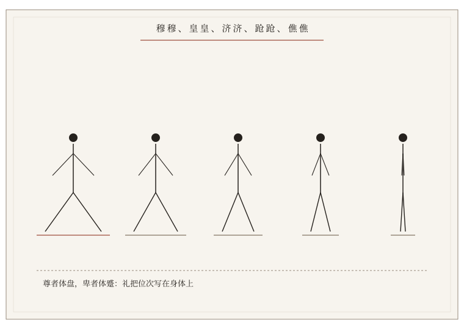

曲礼下 · 二·五十七 · 第 180 课
天子穆穆，诸侯皇皇，大夫济济，士跄跄，庶人僬僬。注「皆行容止之貌……凡行容，尊者体盘，卑者体蹙」。
说什么事：五等人走路的五种样子。
落在哪一层：礼，兼及礼意。论体之盘蹙。
为何编在此位：上节论自称，此节论行容。声与形两面，皆属于「怎么在人前呈现自己」。
【经】天子穆穆，諸侯皇皇，大夫濟濟，士蹌蹌，庶人僬僬。
【注】皆行容止之貌也。《聘禮》曰：「賓入門皇。」又曰：「皇且行。」又曰：「眾介北面鏘鏘焉。」凡行容，尊者體盤，卑者體蹙。
【疏】此一节论天子至庶人行容之貌。「天子穆穆」者，威仪多貌也，天子尊重，故行止威仪多也。「诸侯皇皇」者，自庄盛也，诸侯不及穆穆，而犹有庄盛。「大夫济济」者，济济，徐行有节，大夫降于诸侯，不得自庄盛，但徐行而已也。「士跄跄」者，郑注《聘礼》云「容貌舒扬也」，案郑意则不得济济也，但舒扬而已。「庶人僬僬」者，卑尽之貌也，庶人卑贱，都无容仪，并自直行而已。崔云：「凡形容，下不得兼上，上得兼下，故《诗》有『济济文王』、『穆穆鲁侯』者，诗人颂美，举盛以言，非对例也。」「凡行容，尊者体盘，卑者体蹙」，尊者体盘，穆穆皇皇，卑者体蹙，跄跄僬僬是也。
穆穆 疏「威仪多貌」。
皇皇 注《聘礼》「庄盛也」。疏「自庄盛」。
济济 疏「徐行有节」。
跄跄 郑注「容貌舒扬」。
僬僬 疏「卑尽之貌」「自直行而已」。
体盘、体蹙 盘，宽舒；蹙，局促。
天子走路穆穆然，诸侯皇皇然，大夫济济然，士跄跄然，庶人僬僬然。
五句十五字，写五种人的走相。此节不着一事，只写姿态，却是全卷中最见礼之精微处：礼不只规定人做什么，还规定他怎么做。
第一层 威仪有差 穆穆最多，皇皇次之，济济有节，跄跄舒扬，僬僬无仪。一条递减的线，从「仪之多」到「仪之无」。
第二层 尊者体盘 注一语定全节：「尊者体盘，卑者体蹙」。越尊的人，身体越舒展；越卑的人，越收着。此语可解千般仪节：礼的形体语言，是在身体上写位次。
第三层 下不得兼上 崔氏说「下不得兼上，上得兼下」，又举《诗》「济济文王」「穆穆鲁侯」，谓诗人颂美，举盛以言，非对例。此辨极要：诗之辞与礼之制不同层，不可据诗破礼。
第四层 庶人之无仪 「都无容仪，并自直行而已」。礼在此承认：有一等人不必有仪。这不是轻贱，是把仪还给那些有余力的人。
与今日何干 一个人走进屋子，脚步里已写明他的位置。此语至今不错。
| 左 | 右 |
|---|---|
| 天子穆穆 | 威仪多貌 |
| 诸侯皇皇 | 自庄盛 |
| 大夫济济 | 徐行有节 |
| 士跄跄 | 容貌舒扬 |
| 庶人僬僬 | 卑尽之貌，直行而已 |
| 尊者体盘，卑者体蹙 | 仪之形体，即其位次 |
画五个并排的极简人形侧影，同一地平线、同一身高：第一个身体展得最开（双臂微张、步幅最大）；第二个次之；第三个居中、步子匀；第四个收肩、步小；第五个几乎成一条竖线（示「直行」）。五人身下各画一段横线，长度依次递减。不写文字。赭色只用在第一人足下那段最长的横线。
